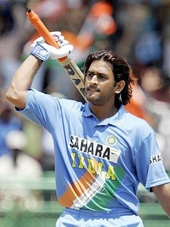
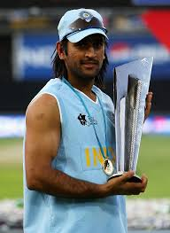
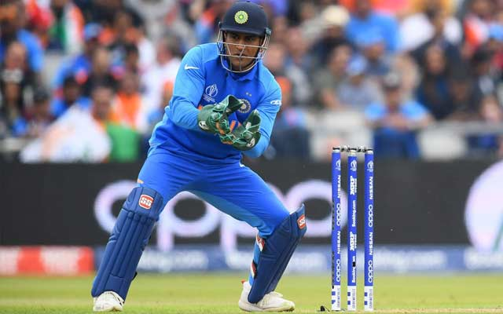
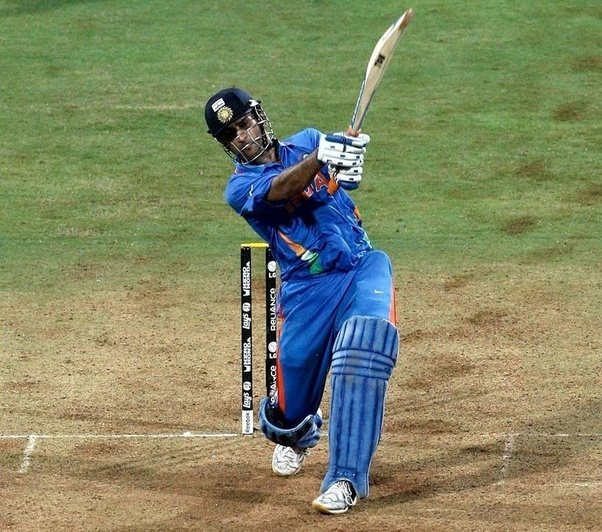
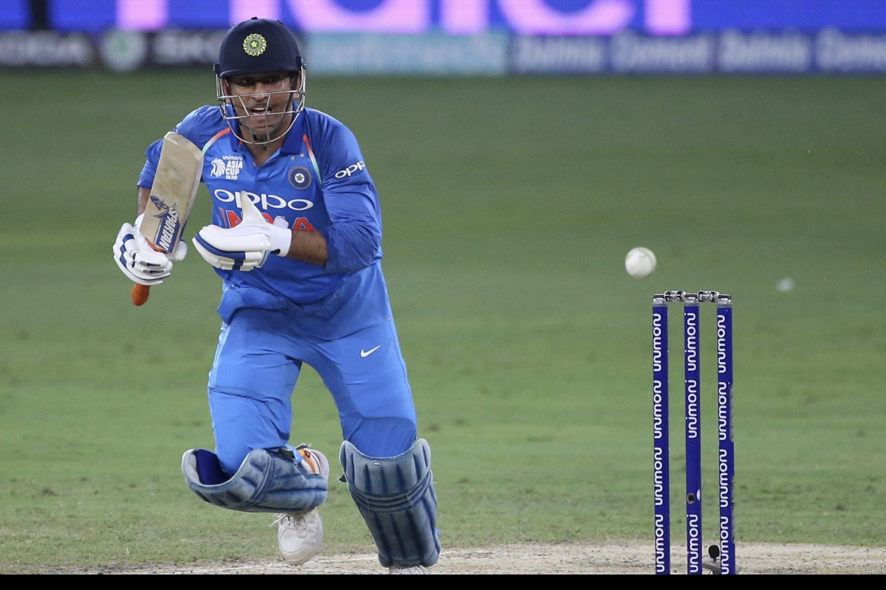
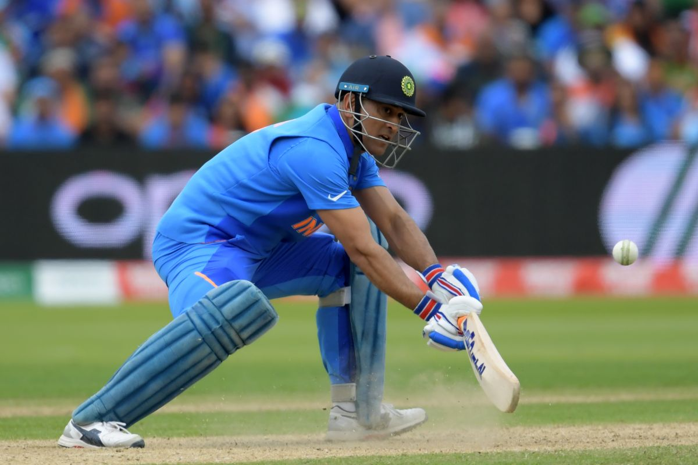
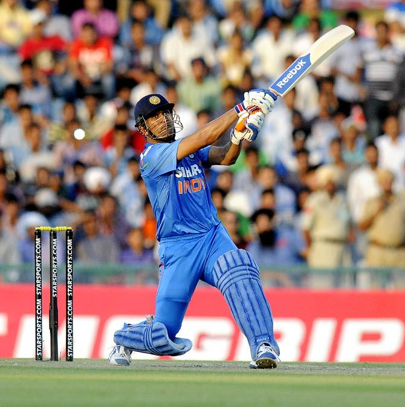
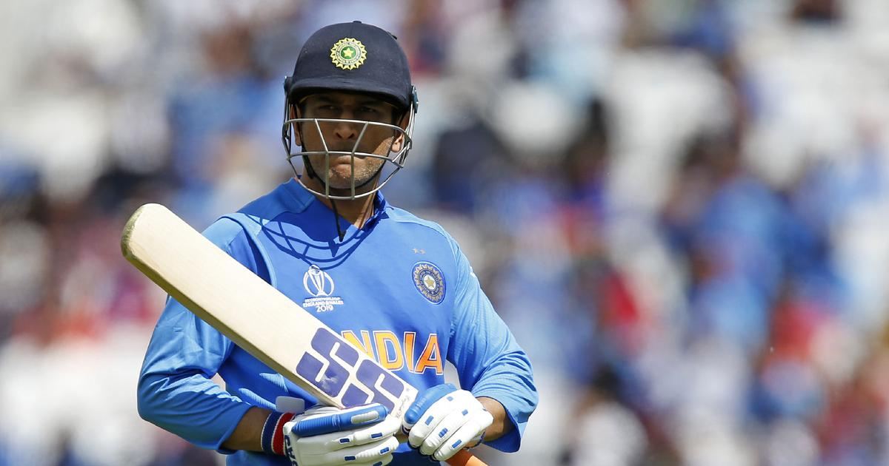

Mahendra Singh Dhoni (born 7 July 1981) is an Indian cricketer and the current captain of the Indian national cricket team. He is an attacking right-handed middle-order batsman and wicket-keeper. He is widely regarded as one of the greatest finishers in limited-overs cricket. He made his One Day International (ODI) debut in December 2004 against Bangladesh, and played his first Test a year later against Sri Lanka. Dhoni is the captain of India in all three forms of the game. His Test and ODI records are the best among all Indian captains to date. He took over the ODI captaincy from Rahul Dravid in 2007 and led the team to its first ever bilateral ODI series wins in Sri Lanka and New Zealand. Under his captaincy, India won the 2007 ICC World Twenty20, the CB Series of 2007–08, the 2010 Asia Cup, the 2011 ICC Cricket World Cup and the 2013 ICC Champions Trophy. In the final of the 2011 World Cup, Dhoni scored 91 not out off 79 balls to take India to victory for which he was awarded the Man of the Match. In 2009, Dhoni also led the Indian team to number one position for the first time in the ICC Test rankings. In 2013, under his captaincy, India became the first team in more than 40 years to whitewash Australia in a Test series. In June 2013, when India defeated England in the final of the Champions Trophy in England, Dhoni became the first captain to win all the three ICC trophies. He has also captained the Chennai Super Kings to victory in the 2010 and 2011 seasons of Indian Premier League along with the 2010 Champions League Twenty20.
|  |  |  |  |
|  |  |  |  |
Known as Captain Cool, the Indian cricket team's list of achievements under Mahendra Singh Dhoni is unprecedented. He guided India to triumph in two separate formats of cricket World Cup, winning the 2007 World Twenty20 and the 2011 Cricket World Cup. Leading by example, he was the Man of the Match in the 2011 World Cup final. Along with being a great batsman, Dhoni is also acknowledged as a leading wicket-keeper. After Tendulkar, Dhoni is the most-loved cricketer in India.